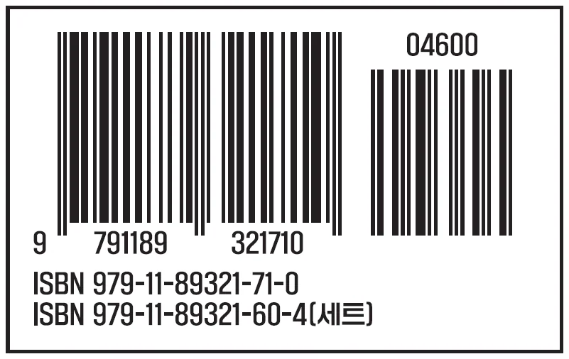

익숙한 미래: 공공디자인이 추구하는 가치
2021 문화체육관광부 문화역서울284 기획전시
The Next of Public Design
“ 공공디자인 확장의 가능성과 Public Design의 Public화 ”
공공디자인의 시작은 필연일까 우연일까?
이탈리아의 미술이론가 프란체스코 란칠로티(Francesco Lancilotti)는 1509년 『회화론(Trattato di pittura)』에서 회화의 성격을 “disegno(계획), inventione(창의), colorito(색), compositione(구성)”의 4가지 요소로 정의했다. 미술사가들은 disegno(디세뇨)를 외적, 내적 개념으로 분류하여 완성된 결과와 완성을 위한 창의적 개념, 즉, 형태로서의 디자인과 과정으로서의 디자인으로 이원화된 정의를 해왔다. 이후 산업화 시대를 맞은 디자인 개념은 기능과 경제 가치를 위한 형태, 도안과 장식에 관한 내용으로 발전해 왔고 산업화의 전성기를 지나고 탈근대적 의식이 무르익으며 다시 인본주의적 사고로 회귀하려는 움직임 속에 디자인도 그 시대 정신을 발현시키려는 움직임이 일어나기 시작했다.
그로 인해 디자인은 유니버설과 지속가능을 이야기하기 시작하였고 사람과 사회를 중심에 두기 시작하였다. 결국 인문적 확장이 이뤄지며 미술전공자의 전문 영역이 아니라 디자인은 점차 역할이 광범위해지고 다양해지면서 사용자를 위한 ‘사람’중심, 사회문제 해결을 위한 ‘사회’중심, 소통과 공유를 통한 ‘공동체’중심의 디자인으로 변해가고 있음은 부정할 수 없다.
이러한 시대적 흐름 속에 2005년 겨울 우리는 순수 국내에서 ‘공공디자인’을 탄생시켰다. 비록 그 시작 단계에서 커다란 담론과 철학을 담는 충분한 숙성과정을 거쳤는지 그리고 일부 소수의 이해관계자들에 의한 것은 아닌지 많은 비평이 있을 수 있지만, 디자인의 인본주의적 시대 정신의 반영이 우리에게도 나타난 것으로 볼 수 있고 그 중심에는 공공디자인이 있었다. 많은 부침 속에 공공디자인은 힘겹게 15년이라는 짧은 시간을
쉬지 않고 달려왔고 세상에 ‘필요’한 디자인이 되기 위해 지금도 많은 시행착오 속에 진화를 거듭하고 있다. 거시적으로 보자면 우연인지 필연인지 disegno(디세뇨)의 과정적, 창의적 가치가 우리에게도 발현되기 시작한 것이며 대한민국 공공디자인은 산업화 이후 진행된 디자인의 개념을 ‘disegno(디세뇨)’ 창의적 의미에 맞게 확장시킨 것이다. 지금 ‘공공디자인’은 디자인의 과정적, 창의적 가치를 수행하는 선도적 역할을 수행해가고 있으며 앞으로 우리 사회에 닥칠 많은 문제에 ‘디자인’이 상당 부분 해결하는 전략과 수단으로 작동하며 삶의 한 문화 축으로 여러 공헌을 할 것이다. 수많은 사람들의 노력과 의지로 시작된, 사람을 위한 시대정신을 실현하는 ‘필연’적인 공공디자인이 우리와 사회를 위한 역할로 자리 잡기 위해 많은 협력과 노력이 지금도 진행 중이다.
공공디자인의 확장 가능성
공공디자인은 매체와 시설 등 공공환경을 중심으로 시작됐다. 『공공디자인의 진흥에 관한 법률』에 근거한 「공공디자인 진흥종합계획」에 따라 안전, 편의, 배려, 품격이라는 주제가 선정되고 공공디자인이 추구해야 하는 형이상적인 비전이 수립되었다. 구체적 유형과 주제가 구축된 공공디자인은 이제 방법론으로 확장되고 참여와 협력의 거버넌스로 진화되어가는 가능성이 있다. 이를 통해 기능적 발전에 한계를 나타내는 여러가지 도시 문제 해결과 인간중심의 공공성 회복의 실천적 대안으로 자리 잡아가고 있다.
참여와 협력의 실천적 방법을 통해 공공디자인의 가능성을 확장하는 데 있어 가장 중요한 것은 민간 주체의 참여이다. 공공디자인은 공공기관이 수행 주체가 되는 디자인 영역이고 법규, 제도, 정책 위주로 시작이 되었기 때문에 국민이 체감할 수 있는 가장 가까운 디자인임에도 불구하고 대다수의 국민들은 ‘공공디자인’을 어렵게 느끼고 있다. 하지만 제도적 공공디자인이 아닌 실천적 공공디자인은 실질적인 문제 해결과 공공가치의 향상을 목적으로 민간 공공의 협력으로 실천하는 현장에서 쉽게 느낄 수 있다. 즉, 공공디자인의 확장을 위해서는 ‘민간-공공 협력의 거버넌스에 기반을 둔 공공디자인 운동’과 같이 실천적인 문화로 우리 삶에 더 친근히 다가와야 한다. 다음 공공디자인(The Next of Public Design)은 법제, 제도 중심의 행정기반 공공디자인이 체계화되어가는 기반 위에서 참여와 실행기반의 공공디자인으로 구조화하고 확장되어 나가야 한다. 이제 공공디자인의 확장은 공공디자인이 그동안 공공에게 쉽게 다가가지 못했던 한계점을 극복하는 데서 먼저 시작되어야 한다.
....“ 공공디자인은 공공에 의한 디자인인가? 공공을 위한 디자인인가?....”
익숙한 미래
“가장 중요한 것은 너무 평범하고 익숙해서 눈에 띄지 않는다.”
- 비트겐슈타인, 철학적 탐구中
Yuriko Saito는 역작 Everyday Aesthetics를 통해 일상 미학(Everyday Aesthetics)은 우리에게 심미적 아름다움이 우리의 일상에 늘 존재한다고 이야기한다. ‘익숙한 미래’는 공공디자인의 확장적 가능성을 탐구하고자 디자인과 공공성, 일상 속 관계와 의미를 찾아보고 이를 대중적으로 이해시키기 위해 친숙하고 일상적인 공간을 통해 보여줌으로써 공공디자인의 다양한 가치를 공유한다. 이를 위해 일상의 가치를 ‘공공디자인 경험’, ‘공공디자인 협력’, ‘공공디자인 연결’, ‘공공디자인 혁신’의 4가지 클러스터로 일상의 사례를 분석했다.
첫 번째 공공디자인 경험은 문제를 해결하기 위한 공공의식 개선을 위한 인지, 심리, 캠페인적인 공공디자인의 유형으로 규정하였고 두 번째 공공디자인 협력은 민간과 공공의 공헌활동과 협력 모델로 구현된 공공디자인의 유형이다. 세 번째로 공공디자인 연결은 공공의 다양한 참여와 연계를 통해 이루어진 공공디자인 유형이고 마지막으로 공공디자인 혁신 유형은 문제 해결을 위한 혁신과 방안의 서비스와 프로그램을 포함한다. 4가지 유형을 통해 공공디자인이 추구하는 공공가치는 공공 안전, 공공 배려, 공공 거버넌스, 공공 편의, 공공 품격, 공공 소통, 공공 혁신, 공공 서비스의 8가지로 정리하여 공공디자인의 가치를 진화시키고자 하였다.
문화역서울284의 기획전시 《익숙한 미래: 공공디자인이 추구하는 가치》는 매체와 시설 등 유형적 설치로부터 시작한 안전, 편의, 배려의 주제로 확장되고 이제는 다양한 참여와 협력을 통해 우리 일상에서 구현되는 공공디자인을 통한 공공가치를 보여주고자 한다. 일상 속 공공디자인은 기능적 발전에 한계를 나타내는 여러 가지 도시 문제 해결과 인간중심의 공공성 회복의 대안이며 대한민국의 공공디자인이 다양한 영역의 일상 속에서 연계와 협력을 통해 공공성을 창출하는 일상적 문화로 진화되어 갈 수 있음을 보여준다. 보편적이고 일반적이어서 너무 ‘익숙’했을 공공가치를 추구하는 다가올 ‘미래’는 우리 공공디자인의 확장을 통해 구현하고자 하는 ‘익숙한 미래’이다.
관람객은 놀이터, 거리, 공원, 학교, 골목, 지하철 등 우리의 일상을 나서면 바로 만나는 6개의 일상공간을 구현한 쇼룸에서 일상 속 8가지의 공공가치를 지닌 공공디자인을 직접 만나고 가치를 찾아볼 수 있다. 일상 속의 공공디자인 사례들은 본질을 표현하기 위해 부가적인 요소들을 최소화하고 디자인의 정제된 핵심 요소만을 미니멀하게 구현하여 마치 레고처럼 단순하며 쉽게 공공가치를 대중적으로 알기 쉽게 디자인되었다. 일방적 텍스트 설명도 최소화하여 관람자들이 일상 속에 평범한 모습을 통해 미처 깨닫지 못했던 공공디자인의 가치를 관조하는 방식이 아닌 경험과 기억 등 다양하며 맥락적인 방법으로 전달하여 관객들과 소통하고자 한다.
문화역서울284는 공공디자인 전시의 안테나숍과 같은 역할을 하고 실제 전시는 전시장 밖 우리 도시공간 전체에서 구현되어 있다. 그곳에 이미 많은 공공 안전, 편의, 배려 등 공공가치를 위한 많은 공공디자인이 있지만 모두 그것이 공공디자인인지 모르고 지나쳤던 것을 이번 전시를 통해 재고하는 기회로 만들고자 하였다. 전시를 통해 일상 속에서 지나쳤을 그 가치를 경험하고 전시장을 나와 우리가 사는 도시 일상 공간 속에서 다시 한번 공공디자인을 느끼게 된다.
《익숙한 미래: 공공디자인이 추구하는 가치》를 통해 공공디자인의 가치와 공공디자인의 비전을 재고하며 쉽고 대중적인 공공디자인으로서 국민 인식 제고, 변화된 사회상에 따른 공공디자인 확장에 대한 가능성을 공유하고자 한다. 또한, 공공디자인이 전문가들만의 어려운 전유물이 아닌 다양한 일상 속에서 공공가치를 창출하는 일상의 문화이며 곧 우리의 삶이라는 것을 전달한다. 이를 기반으로 다양한 이해관계자들이 공공의 문제를 해결하기 위해 협력, 연계하고 실천하는 생활형 문화 운동으로 확산되고 우리 삶의 개선 수단으로 발전되는 ‘공공’화 된 공공디자인으로 진화되어 공공가치를 창출하는 ‘익숙한 미래’를 기대한다.
전시 총괄기획자
홍익대학교 공공디자인전공 교수
출처 : 익숙한 미래 전시회 도록
